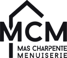

Je pars de zéro
Lancez votre activité avec un site professionnel, crédible et visible dès le premier jour.
- Design 100 % sur-mesure
- Bases SEO intégrées dès la création
- Livraison dès 15 jours
Design sur-mesure, chargement rapide, SEO optimisé : nous concevons des sites pensés pour transformer vos visiteurs en prospects.

+150 sites livrésLancez votre activité avec un site professionnel, crédible et visible dès le premier jour.
Votre site est lent, daté ou ne génère plus de demandes ? Nous le repensons pour convertir, tout en préservant votre référencement existant.
Une boutique pensée pour vendre : parcours fluide, paiement simple et gestion autonome de vos produits.
Découvrez une sélection de sites sur-mesure et explorez-les directement, sans quitter la page.
Packaging
★★★★★
Très bonne expérience pour la création de notre site internet. Le projet a été bien cadré, les échanges fluides et le rendu final correspond exactement à nos attentes. Un grand merci !!
★★★★★
J’ai fait appel à l’agence Digistylze pour la refonte complète de mon site, et je suis vraiment ravi du résultat. L’équipe a été à l’écoute, réactive et très professionnelle.
★★★★★
Avant de travailler avec Digistylze, notre site était quasiment invisible sur Google. Grâce à leur accompagnement SEO, on est enfin en première page ! Merci !
★★★★★
Très bon accompagnement pour la création et la gestion de campagnes marketing digitales. Digistylze sait adapter les messages et les formats en fonction des objectifs, et nos campagnes Meta n’ont jamais été si performantes.
★★★★★
Avant Digistylze, nos réseaux sociaux étaient peu actifs, on n’avait pas le temps. Grâce à leur accompagnement, nous avons désormais une présence digitale professionnelle et structurée qui nous a même amené des clients !
★★★★★
Un audit SEO très complet, avec des recommandations concrètes et adaptées à notre activité. Les optimisations ont eu un impact réel sur notre visibilité.
★★★★★
L’audit SEO a été très détaillé, avec une analyse claire de la structure du site et du contenu.
★★★★★
Belle expérience de tournage avec l’équipe Digistylze. Un grand professionnalisme si vous souhaitez faire appel à leurs services.
Un process clair en 4 étapes pour concevoir, développer et sécuriser votre site sans vous compliquer la vie.
On pose les bonnes bases.
Un échange pour comprendre votre activité, vos objectifs, votre cible et vos besoins. On définit ensuite la structure du site et la direction à prendre.
On s’occupe de tout.
Textes, visuels, photos, structure des pages : nous préparons les contenus et designons l’ensemble du site pour qu’il reflète réellement votre marque.
Votre design devient un vrai site.
Nous développons toutes les pages, adaptons l’expérience au mobile, à la tablette et à l’ordinateur, puis intégrons les optimisations techniques et les bases SEO.
Votre site est prêt à fonctionner.
Nous le mettons en ligne et configurons les éléments essentiels : conformité LPD selon le projet, cookies et mentions nécessaires, certificat SSL, sauvegardes automatiques et sécurisation du site.
Et c’est justement pour ça qu’on préfère être clairs dès le départ.
Votre image de marque vous importe peu.
Vous cherchez simplement le site le moins cher possible.
Vous n’êtes pas prêt à accueillir davantage de demandes ou de clients.
La qualité de ce que vous proposez à vos clients n’est pas une priorité.
Vous préférez copier un concurrent plutôt que construire quelque chose qui vous ressemble.
Vous êtes fier de la qualité de ce que vous proposez.
Vous voulez une image à la hauteur de votre entreprise.
Vous êtes prêt à développer votre activité et à accueillir plus de clients.
Vous cherchez un site qui serve réellement votre business.
Vous voulez vous différencier plutôt que ressembler à tout le monde.
Comparez
| Critère | Agence classique | Freelance | |
|---|---|---|---|
| Délais | Annoncés et respectés | Souvent dépassés | Variables, parfois très longs |
| Tarifs | Transparents, sans frais cachés | Élevés et peu lisibles | À l’heure, difficiles à anticiper |
| Compétences | Équipe complète et polyvalente | Cloisonnées entre équipes | Limitées à un seul domaine |
| Process | Structuré et fluide | Lourd et complexe | Variable selon les projets |
| Communication | Un interlocuteur unique et direct | Interlocuteurs multiples | Pas toujours disponible |
| Flexibilité | Sur-mesure, évolue avec vous | Peu de marge en cours de projet | Suit difficilement vos besoins |
Faites glisser pour comparer →
Questions fréquentes
Digistylze
En ligne
Aujourd’hui · 9:01
Une landing page part en 15 jours. Comptez 30 jours pour un site vitrine et 45 jours pour un e-commerce, à partir du moment où nous avons vos contenus. Le calendrier exact figure dans le devis.
Oui, entièrement. Nom de domaine, hébergement, fichiers, accès : tout est à votre nom. Si vous décidez de partir un jour, vous partez avec tout.
Ça dépend de votre projet, pas de nos habitudes. Une boutique avec un gros catalogue, un site vitrine qui doit être ultra rapide, un besoin très spécifique : chaque situation a sa bonne technologie. On vous la recommande avec ses avantages et ses limites, et dans tous les cas, le site vous appartient à 100 %.
Les fondations SEO sont incluses dans chaque site : structure propre, balises, vitesse, indexation. Pour viser les premières positions sur des mots-clés concurrentiels, un accompagnement SEO mensuel prend le relais.
Oui. Nous construisons des sites que vous pouvez éditer sans compétence technique, et la formation de prise en main est incluse. Vous changez textes, photos et actualités en autonomie.
Vous validez la maquette avant tout développement, et des allers-retours sont prévus à chaque étape. Le projet n’avance pas tant que vous n’êtes pas convaincu.
Vos textes et photos si vous les avez. Sinon, nous proposons la rédaction des contenus et un shooting photo en option. Beaucoup de clients arrivent avec une simple liste de services : ça suffit pour démarrer.
Contact
Bonjour ! Racontez-nous votre projet en deux lignes. On revient vers vous sous 24 h avec un premier avis honnête.
Chargement du site…